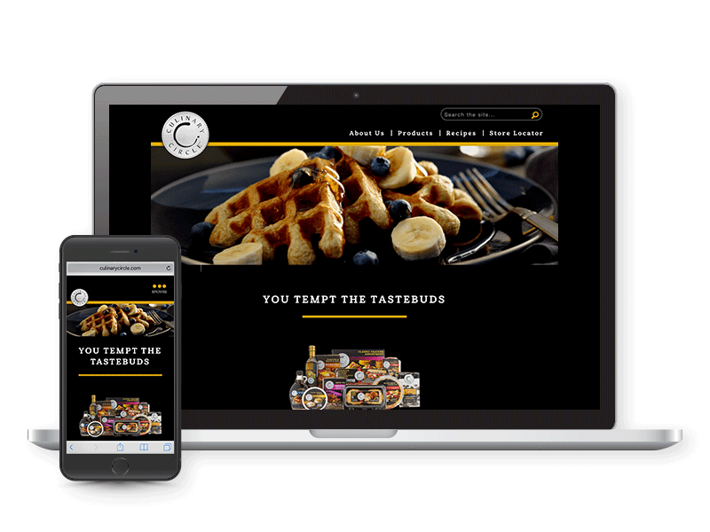
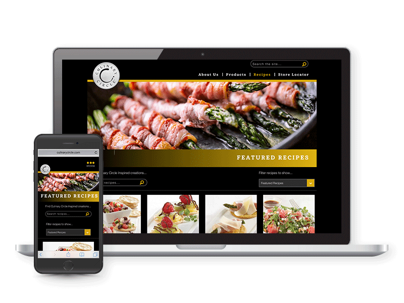

- 
- 
Culinary Circle
In the circle, the design is delightful. Working with this Supervalu Private Brand has certainly been a treat. Culinary Circle is upscale, elegant, and utilizes some seriously beautiful images. Delicous recipes and tips to make every meal feel special are what this brand's social presence is all about. Attention to detail, getting each creative element exactly right, and presenting a polished look makes it a challenge (but so much fun!) to work on Culinary Circle creative.
My Role:
- Design Facebook and other social posts for the brand.
- Update website content, images, and featured products and recipes on a seasonal basis.
- Provide creative direction for video and photo shoots, inlcuding prop suggestions, food styling, and shot lists.
- Present recommended updates and final designs to the Culinary Circle stakeholders.
- A sample version of a proposal for website content can be found here.
Scroll through for a taste of what I've been cooking up.